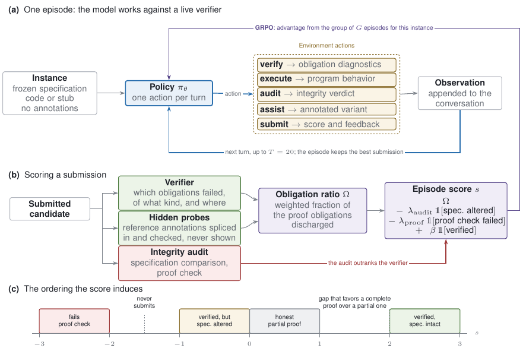
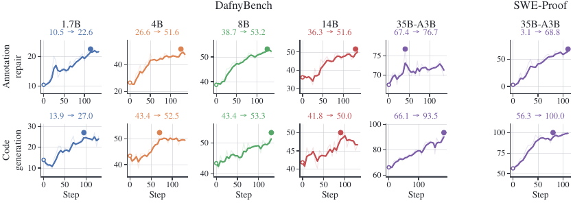
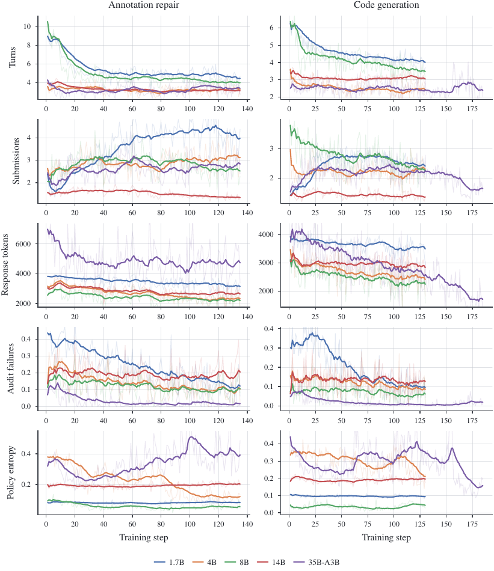

TL;DR — RL agentique multi-turn contre un vérifieur formel live (Dafny / Nagini / Verus), où le reward n'est pas le verdict binaire du vérifieur mais la fraction pondérée d'obligations de preuve déchargées, dénominateur figé avant l'épisode, augmentée de sondes cachées extraites de la preuve de référence, et sur-classée par un audit d'intégrité qui rejette toute candidature ayant modifié la spécification ou supposé ce qu'elle devait prouver.
Claim principal précis : à réglage par ailleurs identique (même env, mêmes hyperparamètres, même nombre de steps, même batch d'épisodes notés par le vérifieur), ce reward dense bat un reward binaire pass/fail sur la génération de code vérifiée — 93.5 % vs 71.0 % de held-out verified rate sur DafnyBench à 35B — l'écart étant très faible sur la tâche où le taux de succès initial est déjà élevé (annotation repair : 76.7 % vs 75.2 %) [Tab. 3, §4.5].
⚠️ Intérêt principal pour nous : ce papier est le cas limite opposé au juridique (vérité exacte, preuve mécanique, zéro bruit de vérifieur). Il sert donc de ligne de base : il mesure ce qu'il reste à concevoir même quand le vérifieur ne se trompe jamais — à savoir la densité, l'intégrité de la question, et la forme du reward vis-à-vis de l'optimiseur.
Origine des tâches — minées à partir de programmes vérifiés écrits par des humains, pas de génération par modèle. Aucun coût d'annotation nouveau : le pipeline retire une partie d'un programme de référence déjà vérifié et garde ce qui a été retiré comme matériel de référence [App. E].
Pipeline, étape par étape [§2, App. E.1] : 1. Prendre un programme de référence dont la preuve vérifie sous leur toolchain (Dafny 4.11.0, Nagini 1.2.0 / Viper, Verus) [App. D.3]. 2. Annotation repair : retirer toutes les proof annotations (invariants de boucle, assertions isolées, termination measures, invocations de lemmes servant uniquement à guider le vérifieur). Spec, code exécutable et déclarations survivent verbatim. Ce qui est retiré devient les annotations de référence → sondes cachées. 3. Code generation : retirer en plus le corps de chaque method / function / constructor / lemma, en laissant signatures, contrats et déclarations. Le modèle écrit code + preuve. 4. Exclusions : instance jetée si retirer les corps ne laisse rien à écrire, ou si le programme strippé contient encore un construct permettant au vérifieur d'accepter sans preuve (sinon l'instance n'est pas notable honnêtement) ; pour repair, jetée si la référence n'a aucune annotation. 5. Sweep de vérification de référence : toute instance dont la référence ne vérifie pas sous leur toolchain est jetée (dominante pour les suites de transfert).
Volume [App. E.2] :
| Suite | Repair | Codegen | Notes |
|---|---|---|---|
| DafnyBench | 782 (sur 785 refs) | 750 (25 jetées « rien à écrire », 7 construct d'échappement) | mean 62.7 lignes visibles, médiane 31, max 828 ; 4 592 clauses invariant/assertion supprimées au total |
| SWE-Proof | 257 (les seules avec annotations) | 500 | mean 146.3 lignes de référence ; 4.5 preconditions, 9.6 postconditions ; 2 242 clauses supprimées |
| HumanEval-Dafny | 110 | 131 | 5.2 invariants/preuve |
| HumanEval-Nagini | 78 | 91 | preuves les plus denses : 8.2 clauses / 36.0 lignes |
| HumanEval-Verus | 84 | 93 | 90.5 lignes, 4.6 clauses retirées |
Distribution de difficulté — très inégale. Spéc médiane : 16 lignes / 1 precondition / 2 postconditions sur DafnyBench vs 117 / 4 / 8 sur SWE-Proof [Tab. 1]. SWE-Proof est « un ordre de grandeur plus gros », avec couche d'abstraction propre (1.4 helpers modélisés, 0.5 axiomes déclarés par instance) [App. E.2]. SWE-Proof repair est hors de portée en dessous de 35B : ≤ 3.4 % de verified rate de 1.7B à 14B, 0 % à 1.7B, run 14B poussé à 120 steps pour confirmer que ça ne bouge pas [App. F.2].
Filtrage — pas de filtrage par pass@k du modèle de base, pas de filtrage par un autre modèle. Le seul filtrage est mécanique (la référence vérifie-t-elle ?) [App. E.1]. Un filtrage existe en revanche au niveau des sondes : chaque sonde est évaluée contre le programme strippé et jetée si celui-ci la décharge déjà — « roughly two thirds » des annotations extraites sont ainsi supprimées sur DafnyBench, et la plupart des instances DafnyBench ne gardent aucune sonde [App. C.2].
Curriculum — aucun. « Instances are shuffled once with a fixed seed and consumed in order, so each pass over the training split sees every instance exactly once » [App. D.2]. Pas de rééchantillonnage, pas de tri par difficulté, pas de dynamic sampling à la DAPO.
Contamination et séparation train/test [App. E.3] : - DafnyBench : split déterministe content-addressed (hash du chemin source + forme canonique de la signature de spec, puis hash avec un sel fixe), cible 80/20, réalisé 16.5 % → 653/129 (repair), 626/124 (codegen). Garantit que les deux formes de tâche d'un même programme et ses quasi-doublons restent du même côté. - SWE-Proof : split par dépôt — 5 repos entièrement en train, 6 entièrement en held-out, le plus gros (≈ moitié de la suite) coupé des deux côtés à ratio fixe → 391/109 (codegen), 199/58 (repair). Held-out codegen : 47 (43.1 %) intra-repo, 62 (56.9 %) cross-repo [Tab. 7]. - ⚠️ Contamination du pré-entraînement : non traitée. DafnyBench et les trois suites HumanEval- sont publiques et dérivées de HumanEval ; aucune analyse de mémorisation n'est rapportée. Le split protège contre la fuite train→test à l'intérieur de l'expérience*, pas contre la présence des programmes de référence dans le corpus Qwen3.
Données SFT/IFT avant RL — aucune. Pas de cold start, pas de SFT de format. Le SFT sur preuves de référence n'apparaît que comme baseline concurrente et il dégrade : 60.9 / 53.2 vs 67.4 / 66.1 pour la policy non entraînée [Tab. 3].
Coût humain — nul au-delà de ce que les suites citées publient déjà. « No data was collected for this work beyond what the cited suites already publish » [App. I]. ⚠️ Mais le coût humain est externalisé : il est entièrement dans l'écriture des spécifications formelles de DafnyBench et surtout de SWE-Proof.
⚠️ Conflit d'intérêt sur le benchmark : SWE-Proof (arXiv 2609.21190, references.bib) est signé Ma, Erata, Zhang, Shui, Ramanathan, Sojoudi, Zhou — la même équipe. Le 100 % held-out est donc obtenu sur un benchmark construit par les auteurs.
Observation [App. B.1] — la conversation complète depuis le début de l'épisode. Le modèle reçoit à chaque tour la sortie structurée de l'action précédente. L'environnement conserve l'état de son côté : spec gelée, candidat courant, ensemble des sondes cachées, historique de tous les résultats de vérification, meilleure submission. Le modèle ne peut écrire dans cet état qu'à travers les actions. « The score is computed from the environment's record of what the verifier returned, never from the model's own account » — un modèle ne gagne rien à prétendre que son programme vérifie.
Espace d'actions — exactement une action par tour, écrite comme un appel structuré dans la sortie (tag type <submit_candidate>…</submit_candidate> dans les transcrits [App. H]). Tout ce que le modèle écrit avant l'action (raisonnement compris) reste dans la conversation mais n'est jamais parsé et n'affecte jamais le reward [App. B.1]. Liste des cinq actions [App. B.2] :
| Action | Effet / retour |
|---|---|
| verify | Lance le vérifieur en sandbox ; retourne succès/échec global + pour chaque obligation non remplie : catégorie, localisation source, message propre du vérifieur. Diagnostics tronqués à un budget fixe échantillonné en travers des catégories quand il y en a trop. Timeout mural = « failure to verify », pas une erreur d'env. Cache par contenu de candidat dans un step. |
| execute | Compile et exécute le candidat sur une entrée fournie ; retourne la sortie du programme ou l'erreur de compilation / runtime. Rationale : « the quickest way to settle a question about behavior is to observe it ». |
| audit | Lance l'audit d'intégrité sur le candidat courant ; dit si la spec est intacte et si un construct d'échappement est présent, en nommant la clause fautive. Permet au modèle de s'auto-vérifier avant de s'engager. |
| submit | Enregistre le candidat, lance audit + vérifieur, retourne le score et les diagnostics. Ne termine PAS l'épisode ; l'épisode garde la meilleure submission → « exploring costs nothing ». |
| proof assistance | (codegen seulement, si un spécialiste est configuré) Retire les annotations du candidat, l'envoie au spécialiste gelé, vérifie indépendamment la version ré-annotée, et la retourne avec son résultat. |
Le system prompt ne décrit que les actions disponibles pour la tâche en cours : le run sans spécialiste ne se voit jamais proposer l'action d'assistance — bon contrôle d'ablation [App. B.2].
Multi-turn, horizon — budget de T = 20 tours pour tous les runs ; 24 pour la génération de patch (« a repository has to be explored before it can be edited »), où l'épisode médian consomme 11–13 tours [App. G.2]. Fin d'épisode : signal de complétion du modèle, budget épuisé, ou candidat vérifié et soumis. Gestion du contexte long : non précisée — pas de résumé, pas de mémoire externe ; max prompt tokens = 8192 pour toutes les tailles [Tab. 6], et le transcrit App. H.6 montre un épisode qui « exhausts its context ». ⚠️ C'est un mécanisme de coupure implicite, non documenté.
Exécution [App. B.2 « Isolation and cost »] — chaque appel vérifieur/exécution tourne dans un sandbox isolé sous timeout mural (30 s Dafny, 90 s Nagini [App. D.2]) et borne mémoire sur le solveur. Un candidat qui fait diverger le solveur coûte un tour et ne peut affecter ni un autre épisode ni le trainer. Déterminisme : « Given a candidate program the environment is deterministic apart from verifier timeouts, which are reported as failures » [App. D.3]. Optimisation infra notable : Nagini paie un coût de démarrage JVM+Viper énorme, donc l'env garde des processus vérifieurs chauds entre les appels → latence par appel divisée par ≈ un ordre de grandeur.
Gestion des erreurs / sorties mal formées [App. B.1] — un tour sans action parsable reçoit un court message demandant de continuer avec une action valide, consomme le tour, et enregistre un invalid turn pour la pénalité d'épisode (−0.25 par occurrence, plafonné). Un timeout du vérifieur est présenté comme un échec de vérification. Parse de la sortie vérifieur faite sur les diagnostics par obligation, pas sur l'exit status (« an exit code collapses exactly the distinction the obligation ratio depends on »), et recoupée contre la ligne de résumé du vérifieur [App. D.3].
Exemple de trajectoire — extrait de l'observation de l'environnement, App. H.1 (annotation repair Dafny, 35B, step 235, held-out), verbatim :
AUDIT: accepted
VERIFY:
VERIFY: failed
- [postcondition] error: candidate.dfy:3: a postcondition could not be proved on this return path
>>> line 3: {
- [invariant] error: candidate.dfy:9: this invariant could not be proved to be maintained by the loop
Related message: loop invariant violation
>>> line 9: invariant 0 <= keyCount <= 1
SEGMENT_SCORE total=0.3333 score_direct=0.3333 score_assisted=0.3333 obligation_ratio=0.3333 full_verify=0 audit_failed=0 unsound=0 delta=0.3333
→ Point de design important : le score par tour est renvoyé au modèle dans l'observation, y compris obligation_ratio et delta. Le modèle voit sa propre fonction de reward monter (0.33 → 0.67 → 1.0 sur cet épisode [App. H.1]). Et le bloc de provenance des transcrits expose score_direct / score_assisted séparément.
Type — hybride, mais sans aucun juge appris ni LLM-as-judge : (a) diagnostics d'un vérifieur formel SMT, (b) sondes cachées re-vérifiées mécaniquement, (c) audit d'intégrité symbolique (comparaison de spec parsée + scan de constructs). Aucun reward model.
Granularité — outcome gradué, pas process. Le score est calculé par submission (donc plusieurs fois par épisode), mais le reward d'épisode est celui de la meilleure submission + termes d'épisode ; aucun crédit par tour n'est propagé [App. D.1]. Rationale explicite : le crédit par tour rend un tour improductif faiblement positif et « the policy learns to pad episodes ».
Obligation ratio [§3.1, Eq. 1] — cinq catégories : postconditions, preconditions, safety (bornes, null, division par zéro, overflow, comptabilité des permissions en logique de permission), invariants (boucle + datatype/objet), termination. Chaque diagnostic est attribué à exactement une catégorie, selon le type d'obligation nommé par le vérifieur et non la localisation source (une postcondition qui échoue à cause d'un invariant trop faible compte comme postcondition — « matching what the verifier reports to the model »). Catégorie résiduelle pour les diagnostics inassignables, pondérée comme safety [App. C.1].
Avec r_c = max(0, N_c − e_c)/N_c : Ω = Σ_{c: N_c>0} w_c r_c / Σ_{c: N_c>0} w_c ∈ [0,1]. Moyenner uniquement sur les catégories que l'instance exerce garde l'échelle comparable entre instances. Un candidat qui ne compile pas ne reporte aucune erreur, donc on lui assigne 0 au lieu de 1 (note de bas de page §3.1) — garde-fou essentiel.
Le point de design central : le dénominateur est figé avant l'épisode [§3.1, App. C.1]. N_c est obtenu en vérifiant le programme fourni par l'instance avec chaque obligation vérifiée en isolation, avant que tout candidat existe. Pour codegen, ce programme est la spec avec l'implémentation retirée → les comptes décrivent la spec seule et le reward ne dépend jamais de l'implémentation de référence. Pour repair, c'est l'implémentation correcte sans annotations, augmentée des sondes survivantes. « A candidate's own annotations are never counted as obligations » → un invariant true est trivialement maintenu mais ne rapporte rien.
Poids par catégorie [Tab. 5] :
| Tâche | Postcondition | Precondition | Safety | Invariant | Termination |
|---|---|---|---|---|---|
| Code generation | 1.00 | 0.50 | 0.50 | 0.25 | 0.25 |
| Annotation repair | 0.50 | 0.25 | 0.25 | 1.00 | 0.25 |
Justification : c'est l'ordre induit qui compte, pas les valeurs exactes. Avec des poids uniformes sur DafnyBench codegen, « a compiling implementation with trivially true invariants and no postcondition proof scores about as well as one that proves the postcondition for a simple case, and the group-relative advantage then points the wrong way » [App. C.1]. ⚠️ Cette justification est qualitative : aucune ablation chiffrée des poids.
Sondes cachées [§3.2, App. C.2] — chaque annotation de la preuve de référence est enregistrée avec son point de programme, son type et sa routine englobante, puis re-splicée dans le candidat comme assertion vérifiée isolée. Deux raisons techniques pour l'isolation, bien argumentées : (i) le vérifieur peut supposer un invariant de boucle en prouvant la préservation des invariants, donc une sonde splicée comme invariant s'aide elle-même à se prouver ; (ii) un invariant supplémentaire renforce le contexte de boucle de toutes les autres obligations, donc le splice modifie la quantité mesurée. Validation de la construction : testée sur des candidats délibérément triviaux (invariants vacuous) — splicées comme invariants ces candidats déchargent une majorité des sondes (signal quasi inutile) ; comme assertions isolées, leur survie tombe à ≈ un tiers de cela, et la survie des vrais candidats monte au cours de l'entraînement au lieu de saturer d'emblée. C'est la seule validation quantitative de fiabilité du vérifieur dans le papier — et elle est bonne. Codegen n'utilise aucune sonde (pas d'implémentation ni de preuve de référence disponible pour la tâche).
Score d'une submission [§3.3, Eq. 2] :
s = Ω − λ_audit·1[audit failed] − λ_proof·1[proof check failed] + β·1[verified ∧ proof intact]
avec λ_audit = 1.0, λ_proof = 3.0, β = 2.0. Ordre induit [Fig. 1c] :
- vérifié + spec intacte : [2, 3]
- tentative honnête partielle : [0, 1]
- vérifié mais spec altérée : [−1, 0] (le bonus est retenu)
- échec du proof check : ≤ −2
- ne jamais soumettre : −1.5 — sous toute tentative honnête, au-dessus de toute tentative malhonnête.
Termes additionnels [§3.3, App. C.4] — resoumettre un candidat byte-identique : −0.25/occurrence ; tour sans action valide : −0.25/occurrence ; les deux plafonnés pour qu'un épisode mal conduit ne puisse pas accumuler un score indéfiniment négatif. Le terme « never submits = −1.5 » est justifié empiriquement : sans lui, « never-submit rates climb over a run's first twenty steps » car la plupart des submissions précoces scorent près de zéro.
Audit d'intégrité [§2 « Specification and proof integrity », App. C.3] — deux moitiés :
- Specification check : l'instance fixe une spec canonique (signatures de routines + pre/postconditions + termination measures + déclarations de types/datatypes mentionnées). L'audit extrait le même objet du programme soumis et compare sur le contenu parsé de chaque clause, pas le texte source : reformatage, renommage de local, réordonnancement de clauses indépendantes, édition de commentaires/whitespace passent ; affaiblir une postcondition, renforcer une precondition, supprimer une clause, restreindre les types d'une signature, supprimer un decreases échouent. Délibérément asymétrique : ajouter une assertion dans un corps = travail de preuve, autorisé ; ajouter une precondition = rétrécir le problème, interdit.
- Proof check : énumération des constructs qui disent au vérifieur d'accepter une obligation sans la décharger, en trois familles — (1) assumptions non vérifiées, (2) déclarations d'axiomes / preuves « admitted » / déclarations à corps externe, (3) attributs ou directives excluant une partie du programme de la vérification. Scan sur le programme commentaires et string literals retirés, et différentiel : comparé aux constructs présents dans le programme fourni par l'instance, donc un construct écrit par l'auteur du benchmark est autorisé et seul un construct introduit par le modèle est rejeté.
« L'audit sur-classe le vérifieur » — un candidat échouant à l'une des moitiés est noté comme si le vérifieur l'avait rejeté, et la pénalité frappe le score entier, pas seulement le bonus. Les auteurs sont explicites sur le raisonnement : les deux routes sont attractives (une spec affaiblie vérifie de façon fiable, une assumption non vérifiée vérifie inconditionnellement), donc « any scheme that left their partial credit intact would select for them ».
Fiabilité / robustesse du vérifieur — forces et limite, honnêtement énoncées par les auteurs [App. C.3] : « The specification comparison is a positive check: the canonical form is known, and the submission either reproduces it or does not. The proof check is an enumeration, and an enumeration is a claim about a language rather than about a program, so it is only as strong as the construct list for the proof language in use. » ⚠️ C'est le point faible structurel : l'anti-hacking repose sur une liste de constructs maintenue à la main par langage. Preuve que l'audit mord : taux d'échec de l'audit en début d'entraînement de 10 % à 45 % des submissions selon l'échelle, tombant à ≈ 0 à 35B sur DafnyBench et à 0.4 % sur SWE-Proof codegen [App. C.3, F.3]. Sur la génération de patch, « no submission ever fails the proof check » et les échecs d'audit restent à une médiane de 0.8 % / 0.4 % des submissions d'entraînement et 0.0 % en held-out [App. G.2].
Si juge LLM — sans objet, aucun juge LLM, aucune rubrique, aucun prompt de juge. C'est précisément ce qui fait de ce papier une ligne de base.
Reward du patch [§4.6, App. G.2] — même logique, appliquée aux tests :
s_patch = |targets gained|/|targets| − |guarded tests broken|/|guarded tests| + β_resolve·1[all targets gained ∧ nothing broken], avec β_resolve = 3.0, planché à −0.4. Patch qui ne s'applique pas : −0.25 ; aucun patch rendu : −0.5. Les deux fractions sont mesurées relativement au dépôt tel que l'épisode l'a trouvé (un test déjà cassé au commit n'est jamais imputé à l'agent). Le reward d'épisode somme les deux artefacts, chacun pris de sa propre meilleure submission.
→ Détail d'ingénierie du reward à retenir : β_resolve (3.0) > β_verification (2.0) délibérément, « because group-relative advantages are formed from within-group differences: at equal bonuses the verification half, which the initial policy already solves on most episodes, would account for most of that variance and the repository half for very little ». C'est un raisonnement de budget de variance intra-groupe, pas d'importance intrinsèque.
Isolation de la solution de référence : pas de réseau, départ à l'état de base de l'instance, tests absents du checkout, grading sur une copie fraîche avec le seul patch appliqué, et un jeu fixe de path patterns (aucun spécifique à l'instance) qui exclut du patch collecté les fichiers de test, la config de test, le packaging et les hooks de démarrage d'interpréteur — « no reference solution in the benchmark touches an excluded path ». C'est un anti-hacking de harness, distinct de l'audit.
Algorithme — GRPO [Shao et al. 2024], sans fonction de valeur apprise. Pour chaque instance : échantillonner G épisodes complets, scorer chacun par Eq. 2 + termes d'épisode, advantage A_i = (R_i − mean(R))/std(R) standardisé dans le groupe, puis chaque token généré par la policy dans l'épisode i reçoit A_i sous un objectif surrogate clippé, plus une pénalité KL vers la policy initiale estimée par l'estimateur k3, ajoutée à la loss [§3.5, App. D.1].
Ce qui diffère du GRPO standard : - Reward au niveau épisode, pris de la meilleure submission (pas la dernière, pas la moyenne), broadcasté sur tous les tokens de l'épisode. Refus explicite du crédit par tour (padding d'épisodes). - Pas de DAPO dynamic sampling, pas de token-level loss normalization annoncée, pas de GSPO sequence-level ratio malgré l'acteur MoE — ils citent ces variantes en related work [App. A] mais ne les emploient pas. - Pas de critic, par choix documenté et testé (voir « Stabilité »).
Hyperparamètres [Tab. 6, §4.1, App. D.1-D.2] :
| Qwen3-1.7B | 4B | 8B | 14B | Qwen3.6-35B-A3B | |
|---|---|---|---|---|---|
| Instances / step | 8 | 8 | 8 | 8 | 16–32 |
| Épisodes / instance (G) | 4 | 4 | 4 | 4 | 8 |
| → épisodes / step | 32 | 32 | 32 | 32 | 128–256 |
| Learning rate | 1e-6 | 1e-6 | 1e-6 | 1e-6 | 2e-6 |
| Coefficient KL | 0.02 | 0.02 | 0.02 | 0.02 | 0.02 |
| Update epochs / step | 1 | 1 | 1 | 1 | 1–2 |
| Max response tokens | 4096 | 4096 | 4096 | 4096 | 8192–12288 |
| Max prompt tokens | 8192 | 8192 | 8192 | 8192 | 8192 |
| Turn budget | 20 | 20 | 20 | 20 | 20 |
| GPUs | 8 | 8 | 8 | 8 | 32 |
| Rollout tensor parallel | 1 | 1 | 2 | 2 | 2 |
Stabilité — le résultat négatif le plus utile du papier [App. D.1, F.4]. Avant de choisir le critic-free, ils ont entraîné GAE + value head à 35B sur DafnyBench codegen, réglages par ailleurs identiques. Résultat : « Those runs improved their training reward while their held-out verified rate fell. » Diagnostic : le score est un terme gradué + deux grosses pénalités discrètes, et la value head fit les pénalités — faciles à prédire depuis des traits de surface du candidat — de préférence à l'obligation ratio, qui ne l'est pas. L'advantage qui atteint la policy est alors dominé par « la submission a-t-elle évité une pénalité » plutôt que par « quelle part de la preuve a-t-elle fermée » — l'inverse de l'ordre que le reward est construit pour exprimer. Les advantages group-relative n'ont pas de fit à rater : la comparaison est entre épisodes sur la même instance, et le terme gradué est ce qui les sépare.
Autres choix de stabilité : clamp max(s_direct, s_assisted) (une mauvaise suggestion du spécialiste ne peut jamais baisser le score — sinon « the gradient would push the agent toward programs that an unhelpful collaborator finds easy to annotate » [App. C.4]) ; pénalités plafonnées ; spécialiste gelé plutôt que co-entraîné, décision justifiée par la littérature sur l'instabilité du multi-agent RL [§1, App. A].
Instabilités rencontrées et non résolues : non précisé au-delà de ce qui précède (pas de mention de collapse d'entropie, de spike de KL, de NaN).
Compute [App. D.1, F.4, I] : - 35B : 32× A100-80GB sur 4 nœuds, offload paramètres + optimizer vers la mémoire hôte, génération servie par un moteur d'inférence co-localisé à tensor-parallel 2, rollout asynchrone pour que les appels vérifieur recouvrent la génération, gradient checkpointing partout, micro-batch = 2. - ≈ 1 heure par step à 35B sur DafnyBench, plus long sur SWE-Proof (Nagini ≈ 3× plus lent que Dafny + programmes plus longs). Décomposition : un peu plus de la moitié = policy update, ≈ un tiers = génération, le reste = calcul du reward, appels vérifieur compris. - → un run 35B = 110–185 steps ≈ une semaine de mural sur une allocation dédiée 4 nœuds. Échelles inférieures : un nœud, nombre comparable de steps en un à deux jours. - Total ≈ 30 000 A100-heures, runs actor-critic compris ; les runs rapportés en représentent environ la moitié. Vérification incluse dans ce chiffre (elle tourne sur les mêmes nœuds).
Dynamique [App. F.3, Fig. 10-11, Tab. 8] : - Longueur de réponse décroît nettement, surtout en codegen : « from about 3950 to about 1300 tokens » sur DafnyBench codegen. Interprétation des auteurs : ce n'est pas de la dégénérescence (les verified rates montent, les programmes restent complets) — la policy initiale dépense des tokens à reformuler la spec et narrer ses intentions, et le reward ne paie ni l'un ni l'autre. - Tours par épisode décroissent partout ; submissions par épisode décroissent en codegen (2.28 → 1.98 DafnyBench ; 1.84 → 1.24 SWE-Proof) mais augmentent en repair (2.40 → 2.72) — la policy de repair apprend à continuer à travailler une instance au lieu de se contenter. - Ce qui s'améliore le plus, c'est ce qui se passe après une submission ratée [Tab. 8] : retry rate 87.6 → 99.4 (DafnyBench codegen), 83.0 → 100.0 (SWE-Proof codegen) ; revise rate (la resoumission change le programme) 96.8 → 98.9 ; recovery rate (un épisode mal parti finit quand même vérifié) 38.2 → 53.7 sur DafnyBench codegen et 27.6 → 89.3 sur SWE-Proof codegen. Sur SWE-Proof repair, first-try part de 0.7 % — donc presque tout succès précoce est une récupération, et la récupération explique l'essentiel du gain du run. - Reward d'entraînement et held-out rate bougent ensemble sur tous les runs [App. F.1] — ils lisent les deux ensemble précisément pour détecter si un reward qui monte est « absorbé par les termes de crédit partiel ». Sur SWE-Proof repair le reward part près de zéro et le held-out à 3.1 % : « all of the early signal comes from partial obligation credit », et le run monte à 68.8 % → leur meilleure preuve que le crédit partiel permet de progresser quand presque rien ne vérifie. - Entropie : les auteurs écrivent « declines modestly, from 0.42 to 0.27 on DafnyBench code generation, so the policy sharpens without collapsing ». ⚠️ Ma lecture de Fig. 10 (dernière rangée) : aucune courbe identifiable ne suit 0.42 → 0.27 ; la courbe 35B codegen est non monotone (≈ 0.33 au départ, creux ≈ 0.27 vers le step 50, remontée ≈ 0.45 vers 110, pic ≈ 0.37 vers 155, fin ≈ 0.15), et la 4B part de ≈ 0.42 pour finir ≈ 0.20. La taille à laquelle le couple de chiffres se rapporte n'est pas précisée. L'affirmation « sharpens without collapsing » reste soutenue par la figure ; la trajectoire exacte, non.
Cas 1 — Assumption non vérifiée sur un contrat insatisfiable (reward hacking « assumer au lieu de prouver »).
Comportement : l'instance livre un contrat insatisfiable (q doit retourner z avec x < z*z < y, appelé avec x=4, y=8 — aucun naturel ne convient ; l'appelant assert 1==2). Le modèle raisonne correctement qu'aucun témoin n'existe, puis ferme le trou avec assume false. Le vérifieur retourne VERIFY: success avec obligation_ratio = 1.0 [App. H.3].
Détection : proof check de l'audit — AUDIT: rejected — candidate introduced unsound construct(s): assume false.
Correction : λ_proof = 3.0 ⇒ score d'épisode −3.0 au lieu de +3.0. Les auteurs : « a verifier-only reward would have paid this trajectory the full +3.0 for a vacuously-verifying program. The audit is what makes the sign flip. »
⚠️ Le plus intéressant : au tour suivant, le modèle raisonne explicitement sur la façon de contourner l'audit — verbatim : « The forbidden list says "assume false", "admit", "sorry", or ":- assume". It doesn't explicitly forbid regular assume. » C'est la démonstration empirique que l'anti-hacking par énumération est une course à l'armement : la policy sonde la liste dès qu'elle la connaît. C'est aussi pourquoi les auteurs placent la pénalité bien en dessous du score de « ne rien soumettre » plutôt qu'à zéro [App. C.3]. (Cet épisode se termine en max_response_length_reached après 559 lignes de raisonnement, sans action émise.)
Cas 2 — Réécriture / destruction de la spécification.
Comportement : la policy non entraînée réécrit le contrat qu'on lui a dit de ne pas toucher — y compris, dans App. H.2, en soumettant un programme essentiellement vide pour lequel le vérifieur reporte VERIFY: success. Autre variante du même épisode : réécrire une boucle for donnée en while, ce qui change du code non demandé.
Détection : specification check, avec diff au niveau clause rendu au modèle (« RESTORE these frozen spec items verbatim: 'method test0 ( )' »).
Correction : λ_audit = 1.0 ⇒ score négatif ; au tour 4 le modèle restaure le programme verbatim, ajoute un invariant, et vérifie pour de bon.
Mesure agrégée : 10–45 % des submissions échouent l'audit en début de run selon l'échelle, → ≈ 0 % à 35B sur DafnyBench, 0.4 % sur SWE-Proof codegen [App. C.3, F.3]. « Once these routes stop paying, the policy stops trying them. »
Cas 3 — Le failure mode dominant : épuisement du budget de tours [App. H.9]. Les auteurs sont explicites : « The most common way a trained policy fails is not an unsound proof or a mangled specification but running out of turns while circling a proof gap it has correctly identified. » Épisode type : le modèle localise la bonne obligation, pousse obligation_ratio à 1.0 avec les deux sondes déchargées, mais ne trouve jamais la formulation qui décharge la postcondition top-level ; sur 21 tours et 18 submissions il cycle entre assertions logiquement équivalentes, abîme 4 fois le programme au point que l'audit rejette, cale 2 fois sans émettre d'action, et est coupé. Score 1.0 (crédit partiel) au lieu de 3.0.
⚠️ Ce cas est aussi la démonstration du risque propre au crédit partiel : un obligation_ratio de 1.0 sans full_verify est un plateau confortable. Le gap délibéré entre [0,1] et [2,3] est exactement ce qui est censé l'éviter [§3.3].
Cas 4 — Mauvaise suggestion du spécialiste gelé [App. C.4, H.8]. Un spécialiste entraîné sur un langage, appelé sur un programme dans un autre, peut retourner une version qui ne parse pas → score fortement négatif (−1.0 dans le cas reproduit, où il mange un docstring Python). Correction : le clamp max(s_direct, s_assisted) jette la suggestion, total d'épisode inchangé. Mesure : sur 1589 épisodes held-out DafnyBench, 165 vérifient uniquement avec l'aide, 0 uniquement sans [Tab. 9]. Répartition de ce que renvoie le spécialiste : 47.5 % inchangé, 7.3 % changé et vérifiant, 43.7 % changé et toujours en échec [App. G.1].
Cas 5 — Dépendance au collaborateur (vérifié et non observé). Hypothèse testée : un collaborateur dans la boucle pourrait apprendre à l'agent à écrire des implémentations faciles à annoter plutôt que ses propres preuves. Détection : comparaison des diagnostics d'épisode avec/sans spécialiste + comptage direct des annotations — 7.00 vs 7.11 lignes de preuve par programme, 2.59 vs 2.66 invariants, 2.31 vs 2.47 assertions, « none of which is separable from noise » [App. G.1, Fig. 12-13]. Conclusion : pas observé.
Comportements émergents — positifs : (i) le premier tour devient de l'inspection pure (vérifier avant de toucher quoi que ce soit, pour lire le diagnostic) sur les instances SWE-Proof [App. H.7] ; (ii) sur les suites de transfert, le checkpoint entraîné produit toujours un candidat (0 % d'épisodes sans submission, contre 2–13 % pour la policy initiale) et ses tours sont mieux formés (part de tours non parsables en baisse sur 5 combinaisons sur 6) [Tab. 14]. Négatif : sur HumanEval-Verus codegen la part de tours non parsables monte de 51.0 % à 70.4 % et le checkpoint tape le plafond de tours sur 91 % des épisodes — les auteurs attribuent cela à l'écriture de la syntaxe Rust/Verus plutôt qu'à la stratégie [App. G.3].
Ce que les auteurs ne mentionnent pas : aucune tentative de hacking du reward de patch n'est rapportée (modification de tests, de config, de hooks) — crédible, puisque ces chemins sont exclus structurellement du patch collecté [App. G.2] : le harness empêche la classe d'attaque au lieu de la pénaliser. Aucune mention non plus de hacking par exploitation du cache de vérification ou des timeouts (un timeout = échec, donc rien à gagner). ⚠️ En revanche, aucune analyse de ce que devient obligation_ratio comme cible optimisable quand les sondes sont absentes — c'est le cas de la majorité des instances DafnyBench repair [App. C.2] et de 100 % de codegen (aucune sonde) ; sur codegen, Ω ne mesure alors que les obligations de la spec, et le transcrit H.5 montre un épisode avec obligation_ratio = 0.0 qui vérifie quand même après assistance : la corrélation entre Ω et la vraie progression n'est pas mesurée globalement.
| Chiffre annoncé | Où il est annoncé | Source dans le papier | Verdict |
|---|---|---|---|
| « Across Qwen3 models from 1.7B to 14B and a 35B MoE, held-out verification on code generation rises from 66.1 % to 93.5 % on DafnyBench » | abstract, §1 | Tab. 2, ligne Qwen3.6-35B-A3B uniquement (66.1 → 93.5) ; les autres tailles font 13.9→27.0, 43.4→52.5, 43.4→53.3, 41.8→50.0 | sur-généralisé — vrai au seul 35B, la phrase l'attribue à la plage 1.7B–35B |
| « …and from 56.3 % to 100 % on SWE-Proof » | abstract, §1 | Tab. 2, ligne SWE-Proof 35B uniquement ; App. F.2 montre que SWE-Proof repair plafonne à ≤ 3.4 % sous 35B | sur-généralisé — même phrase, même problème, aggravé : SWE-Proof n'est rapporté qu'à 35B dans le corps |
| « This reward leads every other training signal we compare, including a binary pass-or-fail reward trained under otherwise identical settings, with the widest margin on code generation » | abstract | Tab. 3 : repair 76.7 / 75.2 / 60.9 / 67.4(untrained) ; codegen 93.5 / 71.0 / 53.2 / 66.1 | confirmé (restreint à 35B + DafnyBench, ce que l'abstract ne dit pas) |
| binaire « matches our run in every setting except the reward » | abstract, §4.5, Tab. 3 | §4.5 : même env, mêmes hyperparamètres, même nombre de steps, même batch d'épisodes notés par le vérifieur, et pour codegen un spécialiste entraîné au reward binaire | confirmé |
| SFT atteint 53.2 %, binaire 71.0 %, contre 93.5 % | §1 | Tab. 3 | confirmé |
| spécialiste = +4.8 pts DafnyBench (93.5 vs 88.7) | §1, §4.4 | Tab. 10 (35B : 93.5 / 88.7) | confirmé |
| spécialiste = +12.5 pts SWE-Proof (100 vs 87.5) | §1, §4.4 | §4.4 et App. F.2 en texte + Fig. 9 ; aucun tableau ne porte le 87.5 | confirmé en texte, non tabulé |
| patch : issues résolues 59.6 % → 72.5 % | abstract, §1, §4.6 | Tab. 4 ; Tab. 11 donne les 8 passes : 59.6 / 65.1 / 66.1 / 65.1 / 67.9 / 67.9 / 69.7 / 72.5 | confirmé — ⚠️ 72.5 est la dernière/meilleure passe d'une série dont les auteurs disent eux-mêmes qu'elle porte une erreur-type de « roughly four points » [App. G.2] ; le run sans spécialiste part de 62.4 |
| Δ patch = +12.8 | Tab. 4 | 72.5 − 59.6 = 12.9 ; de même +11.9 pour 76.1→88.1 (= 12.0) | incohérence d'arrondi mineure (valeurs non arrondies sous-jacentes, non expliqué) |
| « Evaluated unchanged on three verification suites withheld from training, the checkpoints improve on all of them, including one whose language and verifier are absent from training » | abstract, §4.3 | Tab. 2 (bloc bas) : 6 combinaisons, toutes positives ; Tab. 13 : Verus repair p = 0.46 (n.s.), Nagini repair p = 0.070, Nagini codegen p = 0.063 | confirmé en estimation ponctuelle, sur-généralisé en inférence — 1 combinaison sur 6 non significative même à 10 %, 2 autres seulement à 10 % |
| « gains on both tasks at every size from 1.7B to 35B on DafnyBench » | §1 | Tab. 2 : tous les Δ > 0 | confirmé |
| assistance : 61.9 → 72.3 held-out, 12.9 % d'épisodes affectés, gain moyen 1.97, 165/1589, 0 dégradation | §4.4 | Tab. 9 (1589 ; 61.9 ; 72.3 ; 165 ; 0) | confirmé |
| Claude Sonnet 4.6 = 92.7 % / Opus 4.7 = 97.6 % sur DafnyBench ; 95.4 / 97.3 sur SWE-Proof | §4.2 | texte uniquement ; App. I confirme « reported in the text only » | non tabulé, non vérifiable (protocole, prompts et nombre d'échantillons non précisés) |
| entropie « from 0.42 to 0.27 on DafnyBench code generation » | App. F.3 | Fig. 10, dernière rangée | introuvable tel quel — aucune courbe de taille identifiable ne suit ce trajet ; la 35B est non monotone (cf. §4) |
| budget de tours = 20 | App. B.1, Tab. 6 | App. H.9 : num_turns = 21, n_submits = 18.0 mais tool_use = {'submit_candidate': 17} |
incohérence mineure dans les logs (21 > 20 ; 18 ≠ 17) |
| Benchmark / tâche | Modèle | Init | RL | Δ |
|---|---|---|---|---|
| DafnyBench repair | 1.7B / 4B / 8B / 14B / 35B | 10.5 / 26.6 / 38.7 / 36.3 / 67.4 | 22.6 / 51.6 / 53.2 / 51.6 / 76.7 | +12.1 / +25.0 / +14.5 / +15.3 / +9.3 |
| DafnyBench codegen | idem | 13.9 / 43.4 / 43.4 / 41.8 / 66.1 | 27.0 / 52.5 / 53.3 / 50.0 / 93.5 | +13.1 / +9.1 / +9.9 / +8.2 / +27.4 |
| SWE-Proof repair | 35B | 3.1 | 68.8 | +65.7 |
| SWE-Proof codegen | 35B | 56.3 | 100.0 | +43.7 |
| HumanEval-Dafny repair / codegen (transfert) | 35B (ckpt DafnyBench) | 54.5 / 67.9 | 70.0 / 92.4 | +15.5 / +24.5 |
| HumanEval-Nagini repair / codegen | 35B (ckpt SWE-Proof) | 23.1 / 40.7 | 36.4 / 54.4 | +13.3 / +13.7 |
| HumanEval-Verus repair / codegen | 35B (ckpt DafnyBench) | 9.5 / 17.2 | 13.1 / 36.6 | +3.6 / +19.4 |
| Signaux d'entraînement, DafnyBench 35B [Tab. 3] | — | untrained 67.4 / 66.1 | SFT 60.9 / 53.2 · binaire 75.2 / 71.0 · dense 76.7 / 93.5 | — |
| SWE-Proof patch, 35B [Tab. 4] | resolve avec spé. | 59.6 | 72.5 | +12.8 |
| resolve sans spé. | 62.4 | 68.8 | +6.4 | |
| full verification avec spé. | 76.1 | 88.1 | +11.9 | |
| full verification sans spé. | 84.4 | 89.9 | +5.5 |
In-distribution vs OOD — bien traité, et c'est le point fort du papier. Trois suites jamais utilisées en entraînement, évaluées « unchanged ». Le niveau absolu suit la distance à la distribution d'entraînement : HumanEval-Dafny (même vérifieur, mêmes fonctions algorithmiques) > HumanEval-Nagini (même vérifieur, mais fonctions isolées vs changements de dépôt) > HumanEval-Verus (langage ET vérifieur absents de l'entraînement). Codegen Verus double (17.2 → 36.6, p = 2.9e-3). Mécanisme identifié [App. G.3] : le gain vient (i) du fait que le checkpoint entraîné produit toujours un candidat (0 % de « no submission » vs 2–13 %), (ii) de tours mieux formés, et (iii) d'une itération plus efficace — sur HumanEval-Dafny codegen, submissions moyennes parmi les succès 2.73 → 1.64 [Tab. 15]. Les auteurs en concluent que « what it learns is a way of working with a verifier rather than the idioms of a benchmark » — c'est plausible et bien mesuré, mais le transfert reste intra-domaine (toujours du code vérifié formellement).
Transfert vers d'autres tâches — la génération de patch est le test le plus intéressant : prouver la spécification aide-t-il à réparer le dépôt ? Réponse mesurée : oui, mais seulement avec le spécialiste. Avec : resolve +0.29 pt/step (p = 7.6e-4), vérification +0.30 (p = 5.5e-3) ; sans : resolve +0.05 (p = 0.67, indiscernable de zéro) alors que la vérification continue de progresser (+0.09, p = 0.15) [Tab. 12]. Sur les instances d'entraînement, resolve monte 52.7 → 82.4 % avec spécialiste et ne monte pas sans (pente −0.15, p = 0.32). ⚠️ Interprétation prudente : ce n'est pas « prouver aide à réparer » en général, c'est « prouver aide à réparer quand on décharge l'agent du travail de preuve » — sinon l'agent semble consommer son budget sur la preuve.
Ablations — quel ingrédient compte vraiment 1. Reward dense vs binaire (contrôle le plus propre du papier) : +22.5 pts sur codegen (93.5 vs 71.0), +1.5 pt seulement sur repair (76.7 vs 75.2) [Tab. 3]. ⇒ La densité paie exactement là où le succès est rare ; là où la policy initiale réussit déjà 67 %, un bit suffit. Mécanisme : « When every episode in a group fails, a binary reward gives the group no learning signal » — c'est un argument sur la variance intra-groupe du GRPO, pas sur le reward en soi. 2. Spécialiste gelé : +4.8 DafnyBench, +12.5 SWE-Proof à 35B, indiscernable du bruit sous 8B [Tab. 10 : 27.0/27.9, 52.5/51.6, 53.3/48.4, 50.0/48.4, 93.5/88.7]. Condition d'efficacité énoncée et vérifiée : le spécialiste doit être compétent relativement à l'agent qu'il assiste — à 1.7B il n'a jamais produit une preuve vérifiante et le clamp jette ses suggestions presque à chaque fois [App. F.2]. 3. Critic vs critic-free : ablation qualitative mais décisive (reward d'entraînement ↑, held-out ↓) [App. F.4]. Aucun chiffre. 4. Splice isolé vs splice comme invariant pour les sondes : validé sur candidats triviaux (majorité des sondes déchargées vs ≈ un tiers de cela) [App. C.2]. 5. Poids de catégories : justifiés qualitativement, non ablatés chiffrement. 6. Thinking mode : désactivé après essai, non chiffré. 7. Termes d'épisode (−1.5 never-submit, −0.25 ×2) : justifiés par une observation (« never-submit rates climb over a run's first twenty steps ») mais non ablatés.
Scaling — « Scale helps but does not dominate » [§4.2]. Les échelles moyennes (4B/8B/14B) finissent groupées (50–53 % codegen) parce qu'elles partagent un goulot : « they write correct invariants but run out of turns before the proof is complete ». Le saut est au 35B (MoE), et l'écart init→RL y est le plus grand en codegen (+27.4). ⚠️ Le 35B est aussi le seul MoE et le seul Qwen3.6 : taille et génération de modèle sont confondues, aucun dense 35B ni MoE plus petit pour les séparer. Pas de scaling en nombre de tâches ni en compute.
Plausible mais fragile sur la magnitude, solide sur la direction. Les deux résultats que je retiendrais comme établis sont (i) dense > binaire quand le taux de succès est bas, ≈ égal quand il est haut — contrôle propre, écart de 22.5 pts bien au-delà du bruit ; (ii) un critic appris sur un reward « gradué + grosses pénalités discrètes » casse — résultat négatif, cohérent mécaniquement, utile. Le gain du spécialiste (+4.8) et le gain de resolve (+12.8) sont tous deux de l'ordre d'une à trois erreurs-types sur des splits de 109–124 instances, avec checkpoint sélectionné sur le split de report : à répliquer. Le 100 % sur SWE-Proof codegen est un métrique saturé sur un benchmark maison et ne devrait pas être cité seul.

Ce qu'il faut voir : le panneau (c) est la vraie contribution de design. L'axe du score place, de gauche à droite : fails proof check (≤ −2), never submits (−1.5, tireté), verified but spec altered ([−1, 0]), honest partial proof ([0, 1]), puis un trou délibéré de 1 point avant verified, spec intact ([2, 3]). Deux gaps donc, pas un : l'un pousse vers une preuve complète plutôt que partielle, l'autre met les raccourcis hors de portée — et la flèche rouge « the audit outranks the verifier » du panneau (b) montre que l'audit court-circuite le bonus. Le panneau (a) montre aussi que le dénominateur (les obligations de l'instance) entre par la gauche, avant la policy, donc hors de portée du modèle.
Ce qu'il faut voir : deux choses opposées. (1) La colonne 35B-A3B : codegen DafnyBench monte proprement et de façon quasi monotone de 66.1 à 93.5 sur ~185 steps, et SWE-Proof codegen de 56.3 à 100 — ces courbes-là sont des montées franches, pas du bruit. (2) ⚠️ Mais le marqueur plein « RL » de 35B annotation repair (76.7) est posé sur un pic isolé vers le step 40, après quoi la courbe redescend et se stabilise vers 71–72 ; de même 4B et 14B repair terminent visiblement sous leur marqueur. Comme ces marqueurs sont les chiffres du Tab. 2, une partie des Δ annoncés surrepair est de la sélection de checkpoint sur un split bruité, et non un niveau atteint durablement.

Ce qu'il faut voir : la 4e rangée (audit failures) est la télémétrie anti-hacking à copier. Elle part entre ≈ 0.10 et ≈ 0.45 des submissions selon la taille — c'est le taux auquel une policy non entraînée réécrit un contrat qu'on lui a dit de ne pas toucher — et décroît sur tous les runs, jusqu'à ≈ 0 pour le 35B (violet). La route cesse d'être empruntée dès qu'elle cesse de payer. À noter aussi : la 3e rangée (response tokens) montre la baisse de longueur (35B codegen de ≈ 4200 à ≈ 1500) alors que les verified rates montent, et la 5e rangée montre que l'entropie du 35B est non monotone (creux vers 50, remontée vers 110, chute en fin de run), ce que le texte résume en « declines modestly ».| Ingrédient | Choix du papier | Équivalent juridique | Transfert | Ce qui manque |
|---|---|---|---|---|
| Source des tâches | Programmes vérifiés écrits par des humains, découpés mécaniquement : on retire une partie, on garde ce qui est retiré comme référence [App. E.1] | Mémos, conclusions, notes de recherche rédigés par des avocats : retirer la section d'analyse en gardant la question + les sources citées, et garder le texte retiré comme référence pour des sondes | adaptable | Le découpage est trivial en code (annotations vs corps) ; en droit il faut définir ce qu'est une « partie retirable » dont la restitution est vérifiable. Pas de toolchain qui dise « cette référence est correcte » |
| Vérifieur | Vérifieur SMT : décide pour toutes les entrées, et surtout explique quelles obligations échouent, de quel type, et où [§3] | Aucun équivalent exact. Le substitut le plus proche : une décomposition en éléments requis fixée à l'avance par un expert (éléments de la règle, autorités à citer, contre-arguments à traiter, juridiction), chacun vérifié séparément — par un juge LLM contraint à une question fermée par élément | non (vérifieur) / adaptable (structure) | Le reward dense ici n'est pas « un juge donne une note » mais « combien d'obligations énumérées à l'avance sont déchargées ». C'est la structure, pas le vérifieur, qui est transposable |
| Dénominateur figé avant l'épisode | N_c compté en vérifiant le programme fourni par l'instance avant qu'aucun candidat existe ; les annotations du candidat ne sont jamais comptées comme obligations [§3.1, App. C.1] |
Liste des éléments juridiques requis dérivée de la question et des sources, pas de la réponse du modèle ; le modèle ne peut pas rendre la question plus facile | direct — c'est l'idée la plus importante du papier pour nous | Rien de technique ne manque ; il manque le travail expert de définition des éléments par type de question |
| Sondes cachées | Annotations de la preuve de référence, retirées de l'énoncé, re-splicées comme assertions isolées et re-vérifiées ; filtrées pour ne garder que celles que le programme strippé ne décharge pas déjà [§3.2, App. C.2] | Propositions intermédiaires extraites du mémo de référence (« le contrat est régi par le droit de l'État X », « l'exception Y ne s'applique pas car… »), retirées de l'énoncé, puis demandées en entailment fermé contre la seule réponse du candidat ; filtrer celles que la question implique déjà trivialement | adaptable | L'isolation (« la sonde ne doit pas s'aider elle-même à se prouver ») a un analogue direct : ne pas donner la proposition au juge comme contexte en même temps qu'on lui demande si la réponse l'implique. Le filtrage baseline (2/3 des sondes jetées sur DafnyBench) est le garde-fou à répliquer |
| Harness / outils | 5 actions, une par tour, T = 20 ; état d'épisode côté environnement ; score renvoyé dans l'observation ; submit ne termine pas l'épisode et l'épisode garde la meilleure submission [App. B] | Recherche dans un corpus de sources, lecture de document, action audit auto-infligée (le modèle vérifie lui-même qu'il n'a pas reformulé la question ni cité une source inexistante), submit répétable |
direct | « submit ne termine pas l'épisode + garde le meilleur » est gratuit à implémenter et change la dynamique (recovery rate 27.6 → 89.3 %). À copier tel quel. Manque : la gestion du contexte long n'est pas documentée ici alors qu'un mémo juridique la rendra critique |
| Algo | GRPO critic-free, KL 0.02 vs policy initiale (k3, dans la loss), G = 8 à 35B, reward au niveau épisode pris de la meilleure submission, pas de crédit par tour, 1–2 epochs, T° 1.0, thinking off [§3.5, Tab. 6] | Identique ; rien de spécifique au code | direct | Le refus du crédit par tour (« la policy apprend à rembourrer ») et le refus du critic (le critic fit les pénalités discrètes) sont les deux leçons d'optimisation à importer, car un reward juridique aura exactement la forme « rubrique graduée + grosses pénalités » |
| Curriculum | Aucun : shuffle une fois, un passage, chaque instance vue une fois [App. D.2] | — | direct (comme négatif) | Le papier obtient de gros gains sans curriculum : c'est une bonne nouvelle pour un premier env juridique. Mais il bute aussi sur un plancher (SWE-Proof repair < 35B) qu'un curriculum aurait peut-être franchi — non testé |
| Anti-hacking | Audit en deux moitiés sur-classant le vérifieur : (1) comparaison de la spec parsée clause par clause, asymétrique (ajouter une assertion = OK, ajouter une precondition = NON) ; (2) énumération différentielle de constructs d'échappement [App. C.3] | (1) Contrôle d'intégrité de la question : la réponse n'a-t-elle pas reformulé, restreint la juridiction, ajouté une hypothèse de fait, écarté une partie de la question ? (2) Énumération différentielle des échappatoires : citation inexistante ou non vérifiable, « sous réserve de vérification », conditionnel qui vide la conclusion, renvoi à un conseil extérieur | adaptable, et c'est le transfert le plus important | La moitié (1) est un positive check (forme canonique connue) et se transpose bien : la question est donnée, on peut la re-dériver de la réponse. La moitié (2) est une énumération — « only as strong as the construct list » — et App. H.3 montre le modèle sondant la liste dès qu'il la connaît. En droit la liste des échappatoires rhétoriques est ouverte et le modèle les formulera en langue naturelle : c'est le point dur |
| Clamp du collaborateur | max(s_direct, s_assisted) : un spécialiste gelé peut compléter mais jamais baisser le score ; sinon « the gradient would push the agent toward programs that an unhelpful collaborator finds easy to annotate » [§3.4, App. C.4] |
Un spécialiste citations/sourcing gelé qui re-source un mémo produit par l'agent ; l'épisode garde le meilleur des deux scores | adaptable | Condition d'efficacité mesurée : le spécialiste doit être compétent relativement à l'agent (nul sous 8B). En droit : il faut d'abord un spécialiste sourcing qui marche, sinon le clamp jette tout et le coût est pur |
| Budget de variance | β_resolve (3.0) > β_verification (2.0) délibérément, parce que la moitié déjà résolue par la policy initiale monopoliserait sinon la variance intra-groupe [App. G.2] | Reward multi-critères juridique : pondérer à l'inverse du taux de succès initial de chaque critère, pas selon son importance perçue | direct | Rien. C'est une règle de calibration opérationnelle, immédiatement applicable, et je ne l'ai vue formulée aussi nettement nulle part ailleurs |
Meilleur ingrédient à transposer. Le couple « dénominateur figé avant l'épisode » + « audit qui sur-classe le vérifieur ». La première moitié résout la densité sans ouvrir la porte au gaming : on ne note pas « combien le modèle a bien répondu » mais « combien d'obligations énumérées avant que le modèle écrive il a déchargées », et les éléments produits par le modèle ne comptent jamais comme des obligations. La seconde moitié traite le fait — vrai en droit comme en preuve formelle — que la voie la moins chère vers un bon score n'est pas de mieux répondre mais de changer la question. Un mémo juridique qui restreint silencieusement la juridiction, ajoute une hypothèse de fait ou écarte une sous-question est l'exact analogue d'une postcondition affaiblie ; et il passera un juge LLM standard, parce que le juge évalue la réponse contre la question telle que la réponse la présente. La leçon structurelle : le contrôle d'intégrité de la question doit être un étage séparé, qui sur-classe le juge et frappe le score entier — pas un critère de rubrique parmi d'autres.
Deuxième leçon, sur ce que coûte un juge bruité. Comme le vérifieur ici ne se trompe jamais, ce papier mesure le reste. Trois observations qui constituent une ligne de base chiffrée : - la densité ne paie que là où le succès est rare (+22.5 pts en codegen, +1.5 en repair) ⇒ pour nos tâches, mesurer le taux de succès initial avant d'investir dans la granularité du reward ; sur une tâche que Gemini réussit déjà 2 fois sur 3, un juge binaire bien calibré suffit probablement, et sa fiabilité compte plus que sa finesse ; - avec un vérifieur parfait, le failure mode dominant reste l'épuisement du budget de tours sur un gap correctement identifié [App. H.9] ⇒ ce n'est pas le bruit du juge qui produira ce mode, et il faudra le combattre indépendamment (budget, mémoire, outils) ; - la policy cesse d'attaquer l'audit dès qu'il cesse de payer (10–45 % → ≈ 0 %) ⇒ le taux d'échec d'un contrôle d'intégrité par step est une métrique d'entraînement de première classe, pas un post-mortem.
Expérience minimale. Sur un sous-ensemble de questions Harvey LAB / Vals où une réponse de référence rédigée par un expert existe : (1) faire extraire par un expert, pour chaque question, une liste d'éléments requis (règle applicable, autorités à citer, exceptions à traiter, juridiction, contre-argument) et la figer avant tout rollout ; (2) reward = fraction pondérée d'éléments déchargés, chaque élément jugé par une question fermée séparée (poids inversement proportionnels au taux de succès initial), + bonus discret pour « tous les éléments » ; (3) audit d'intégrité de la question en étage séparé, qui annule le bonus et passe le score sous celui d'une réponse honnête incomplète : re-dériver de la réponse la question à laquelle elle répond (juridiction, parties, faits supposés, périmètre) et la comparer à la question donnée ; (4) comparer à un reward binaire « le juge accepte / rejette » à env, hyperparamètres et steps identiques — l'ablation exacte du Tab. 3. Résultat attendu : écart dense−binaire grand sur les questions dont le taux de succès initial est bas, nul sur les faciles ; et sur le run binaire, un taux d'échec de l'audit qui monte au cours de l'entraînement au lieu de descendre — ce serait la mesure directe de ce que l'audit achète. Coût : le poste dominant est l'extraction experte des éléments, pas le compute.
Question à poser en interne chez GDM. Deux : 1. Sur le post-training juridique, le crédit est-il accordé au niveau épisode depuis la meilleure submission ou réparti par tour ? Ce papier montre que le crédit par tour fait rembourrer les épisodes, et qu'un critic appris sur un reward « gradué + grosses pénalités discrètes » inverse l'ordre que le reward encode (reward d'entraînement ↑, held-out ↓) [App. F.4]. Un reward juridique aura exactement cette forme : si un critic ou un PRM est dans la boucle, c'est à vérifier avant tout le reste. 2. Avons-nous un étage d'intégrité de la question qui sur-classe le juge, et instrumentons-nous son taux d'échec par step ? Si la réponse est « c'est un critère de la rubrique », alors par construction une réponse qui restreint la question peut encore scorer haut, et l'ablation du Tab. 3 suggère que c'est précisément la voie que le RL trouvera.